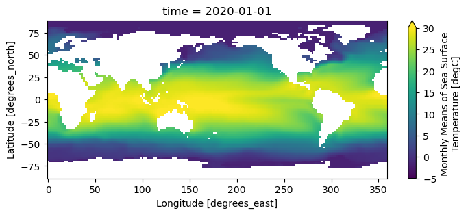
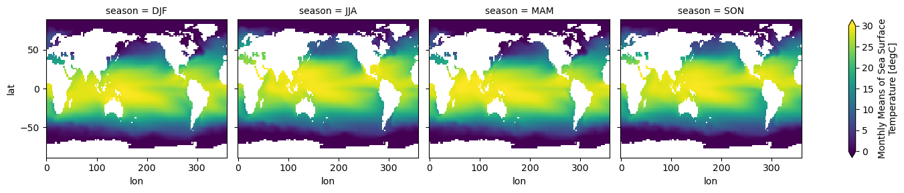
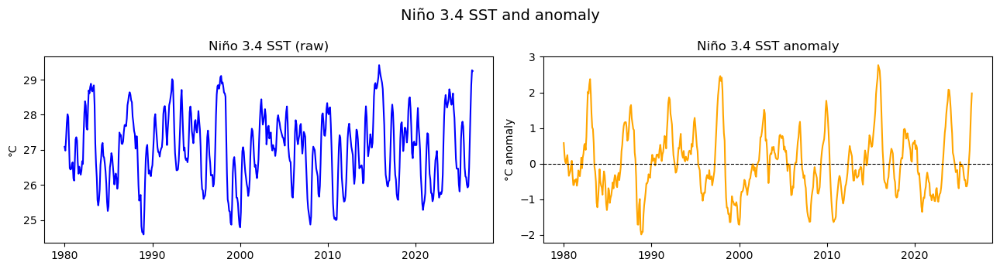
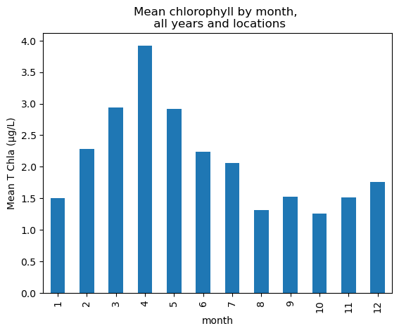
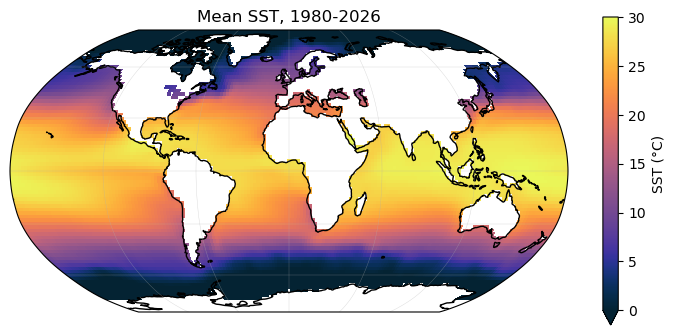
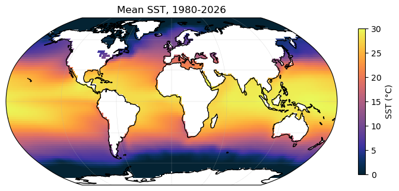
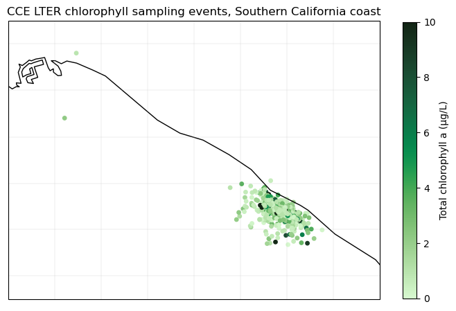

Data Workshop 1
Instructors: Argen Smith (PO), Sophie Wynn (CS), Tommy Stone (AOS)
Before the Workshop
Installations
We expect that you will have Conda and VS Code installed on your computer before attending the workshop. If you need help we will have office hours to help with installs and troubleshoot issues from 12:30pm - 1:25pm in Munk Lab 303 on 09/18.
See the below website for instructions to install
Github Repository
All notebooks can be found on the Math Workshop Github
Data
You can download the available datasets that we will used for the workshop from our data folder on Google drive. You will need your UCSD google account to access the site.
1) Python environment management and modules
Teacher: Argen Smith TA: Sophie Wynn, Tommy Stone
2) Reading, Slicing and Plotting data
Teacher: Sophie Wynn TA: Argen Smith, Tommy Stone
Reading, Slicing & Plotting Ocean Data
xarray and pandas → cartopy/matplotlib/cmocean
Part 1 — Reading Data, Slicing, with xarray and pandas
1.1 Reading data files
netCDF (.nc) files are in a self-describing binary format that bundles the data and its coordinates, units, and metadata in one file. xarray is the standard tool for reading them because it keeps that structure intact (unlike loading straight into a bare NumPy array).
CSV (csv) file, stands for comma-separated values, is a plain text file used to store table data like rows and columns. Pandas is the standard tool for reading them.
How you’d read each dataset
Dataset |
format |
How you’d open it |
|---|---|---|
SST |
netCDF, regular lat/lon grid |
|
Chlorophyll (CCE LTER) |
csv, one row per sampling event |
|
SSH |
most likely: netCDF, regular lat/lon grid |
|
Tide gauge |
? |
|
[2]:
# this segment of code is for loading libraries
import pandas as pd
import xarray as xr
import geopandas as gpd
import matplotlib.pyplot as plt
import cartopy.crs as ccrs
import cmocean
1.1 Xarray
[3]:
#open the sea surface temperature dataset using xarray
ds_sst = xr.open_dataset("/Users/sophiewynn/Desktop/lesson plans/MathWorkShop/sst_workshop.nc")
ds_sst
[3]:
<xarray.Dataset> Size: 36MB
Dimensions: (lat: 89, lon: 180, time: 559)
Coordinates:
* lat (lat) float32 356B 88.0 86.0 84.0 82.0 ... -82.0 -84.0 -86.0 -88.0
* lon (lon) float32 720B 0.0 2.0 4.0 6.0 8.0 ... 352.0 354.0 356.0 358.0
* time (time) datetime64[ns] 4kB 1980-01-01 1980-02-01 ... 2026-07-01
Data variables:
sst (time, lat, lon) float32 36MB ...File formats, and meta data
Data variables —here just
sst, but a file could hold several.
A Dataset is a container of one or more DataArrays that all share coordinates. Pulling out a single variable — ds.sst — gives you a DataArray, which is the thing you’ll slice and plot most of the time.
[6]:
sst = ds_sst["sst"] # now sst is a DataArray object, which is a single variable from the dataset
#print(sst)
print()
print("units:", sst.attrs.get("units"))
#print("long name:", sst.attrs.get("long_name"))
#print("source:", sst.attrs.get("dataset"))
units: degC
1.2 Slicing and selecting
xarray lets you select data by label (.sel) and of by integer position (.isel). When using .sel you type in the variable or coordinate and what you are looking for, not the indice
[8]:
# Select the data for January 2020
jan2020 = ds_sst.sel(time="2020-01-01")
jan2020
[8]:
<xarray.Dataset> Size: 65kB
Dimensions: (lat: 89, lon: 180)
Coordinates:
* lat (lat) float32 356B 88.0 86.0 84.0 82.0 ... -82.0 -84.0 -86.0 -88.0
* lon (lon) float32 720B 0.0 2.0 4.0 6.0 8.0 ... 352.0 354.0 356.0 358.0
time datetime64[ns] 8B 2020-01-01
Data variables:
sst (lat, lon) float32 64kB ...[9]:
# a time range
recent = ds_sst.sel(time=slice("2015-01-01", "2020-12-31"))
recent
[9]:
<xarray.Dataset> Size: 5MB
Dimensions: (lat: 89, lon: 180, time: 72)
Coordinates:
* lat (lat) float32 356B 88.0 86.0 84.0 82.0 ... -82.0 -84.0 -86.0 -88.0
* lon (lon) float32 720B 0.0 2.0 4.0 6.0 8.0 ... 352.0 354.0 356.0 358.0
* time (time) datetime64[ns] 576B 2015-01-01 2015-02-01 ... 2020-12-01
Data variables:
sst (time, lat, lon) float32 5MB ...[ ]:
# selecting or grouping by time it season
djf = ds_sst.sel(time=ds_sst["time.season"] == "DJF") # all Dec/Jan/Feb months, any year
# take the average sst of all the DJF months
djf_mean = djf.mean(dim="time")
djf_mean
[18]:
# you can also use the groupby method to group by season and then take the mean
seasonal_mean = ds_sst.groupby("time.season").mean(dim="time")
seasonal_mean
[18]:
<xarray.Dataset> Size: 257kB
Dimensions: (season: 4, lat: 89, lon: 180)
Coordinates:
* lat (lat) float32 356B 88.0 86.0 84.0 82.0 ... -82.0 -84.0 -86.0 -88.0
* lon (lon) float32 720B 0.0 2.0 4.0 6.0 8.0 ... 352.0 354.0 356.0 358.0
* season (season) object 32B 'DJF' 'JJA' 'MAM' 'SON'
Data variables:
sst (season, lat, lon) float32 256kB -1.8 -1.8 -1.8 ... nan nan nanQuestion: Can you select the Niño 3.4 region which is between (-5-5, 190-240). This is used to track sst to monitor El Niño / La Niña?
[11]:
#nino34_box = ?
nino34_box = ds_sst.sst.sel(lat=slice(5, -5), lon=slice(190, 240))
Area-weighted means. On a lat/lon grid, boxes near the poles cover much less real ocean area than boxes near the equator, so a plain .mean(["lat","lon"]) over-weights high latitudes. The fix is to weight each row by cos(latitude) before averaging:
[13]:
import numpy as np
weights = np.cos(np.deg2rad(nino34_box.lat))
nino34_index = nino34_box.weighted(weights).mean(dim=["lat", "lon"])
nino34_index
[13]:
<xarray.DataArray 'sst' (time: 559)> Size: 2kB
array([27.087723, 26.979757, 27.316122, 27.758884, 28.015308, 27.938494,
27.230425, 26.477413, 26.440502, 26.460802, 26.601553, 26.64585 ,
26.18831 , 26.123468, 26.65929 , 27.296642, 27.361252, 27.265312,
26.65053 , 26.320612, 26.520903, 26.416492, 26.292328, 26.401995,
26.678118, 26.599176, 27.423162, 28.033892, 28.385727, 28.255865,
27.6577 , 27.57601 , 28.204529, 28.693298, 28.6136 , 28.789663,
28.883419, 28.688124, 28.665266, 28.773945, 28.839191, 28.276678,
27.189827, 26.597141, 26.203362, 25.570133, 25.419136, 25.575058,
25.878386, 26.569353, 26.776297, 27.145086, 27.198494, 26.824575,
26.781422, 26.603504, 26.375423, 26.038363, 25.51839 , 25.259922,
25.392313, 26.036531, 26.503597, 26.652508, 26.907919, 26.811264,
26.549212, 26.293556, 26.01578 , 26.227144, 26.32571 , 26.191793,
25.892385, 26.06482 , 26.881714, 27.493721, 27.40791 , 27.424284,
27.17766 , 27.168816, 27.239779, 27.514448, 27.7044 , 27.714104,
27.67598 , 27.889465, 28.2721 , 28.399609, 28.558054, 28.641768,
28.578287, 28.413252, 28.358025, 27.952196, 27.772263, 27.542849,
27.451145, 27.036728, 27.38799 , 27.380682, 26.684141, 25.989532,
25.55583 , 25.664465, 25.716589, 24.823757, 24.656416, 24.639172,
24.59034 , 25.291838, 26.08573 , 26.751898, 27.065933, 27.142822,
26.714785, 26.323334, 26.413351, 26.314657, 26.249388, 26.46425 ,
...
26.134348, 26.681747, 27.32713 , 28.031487, 28.291162, 28.062868,
27.551317, 26.704487, 26.290203, 26.154354, 25.745375, 25.612225,
25.573965, 25.98431 , 26.497837, 27.32192 , 27.740665, 27.787521,
27.435375, 26.96744 , 27.204218, 27.632767, 27.62422 , 27.49655 ,
27.210815, 27.487299, 28.110186, 28.456547, 28.499243, 28.189072,
27.653612, 26.909607, 26.764008, 27.213615, 27.237473, 27.128824,
27.159166, 27.135008, 27.776552, 28.191046, 27.664125, 27.39275 ,
26.996828, 26.271444, 25.892395, 25.467934, 25.289114, 25.452389,
25.553785, 25.760168, 26.494886, 27.106337, 27.47458 , 27.445433,
26.899677, 26.32029 , 26.161402, 25.772812, 25.756062, 25.535282,
25.600288, 25.868153, 26.31618 , 26.706886, 26.817638, 26.968536,
26.586575, 25.874804, 25.639412, 25.7177 , 25.792662, 25.742111,
25.8346 , 26.302967, 27.18393 , 27.961428, 28.396135, 28.563614,
28.313799, 28.204784, 28.316853, 28.437904, 28.727358, 28.633078,
28.367107, 28.2853 , 28.424322, 28.609297, 28.176764, 27.912195,
27.349144, 26.746483, 26.469118, 26.458813, 26.467201, 26.015436,
25.815336, 26.332958, 27.302248, 27.684994, 27.803028, 27.66202 ,
27.1506 , 26.492561, 26.246958, 26.216991, 26.006536, 25.928497,
25.970411, 26.492887, 27.285149, 28.127031, 28.840485, 29.269 ,
29.246767], dtype=float32)
Coordinates:
* time (time) datetime64[ns] 4kB 1980-01-01 1980-02-01 ... 2026-07-01Climatology and anomaly. Two of the most common operations on any Earth-science time series: the climatology is the typical seasonal cycle; the anomaly is how far a given month (year etc) departs from its own climatological month (year etc).
[14]:
climatology_nino34 = nino34_index.groupby("time.month").mean("time") # 12 values: typical Jan..Dec
nino34_anom = nino34_index.groupby("time.month") - climatology_nino34 # same length as the input series
Question: Can you also calculate the climatology and anomalies for the full global fieldinstead of just the Niño 3.4 region?
1.3 Quick plotting with xarray
xarray objects have a built-in .plot() that infers the right chart type from the shape of the data, it knows a 2-D (lat, lon) slice becomes a map, a 1-D (time,) series becomes a line plot etc plus it also labels axes/colorbars for you automatically. It’s the fastest way to look at data while you’re exploring; you’ll reach for cartopy in once you want proper map projections and coastlines for a figure you plan to share.
[16]:
sst.sel(time="2020-01-01").plot(figsize=(8, 3), cmap="viridis", vmin = -5, vmax = 30)
[16]:
<matplotlib.collections.QuadMesh at 0x14abaea70>

[19]:
seasonal_mean.sst.plot( col = "season", figsize=(15, 3), vmin=0, vmax=30)
[19]:
<xarray.plot.facetgrid.FacetGrid at 0x14aed7640>

1.4 matplotlib subplots, cartopy, and cmocean
[20]:
fig, axes = plt.subplots(1, 2, figsize=(13, 3.5))
#nino34_index.plot(ax=axes[0])
# or
axes[0].plot(nino34_index.time, nino34_index, color="blue")
axes[0].set_title("Niño 3.4 SST (raw)")
axes[0].set_ylabel("°C")
#nino34_anom.plot(ax=axes[1])
# or
axes[1].plot(nino34_anom.time, nino34_anom, color="orange")
axes[1].axhline(0, color="k", lw=0.8, linestyle="--")
axes[1].set_title("Niño 3.4 SST anomaly")
axes[1].set_ylabel("°C anomaly")
plt.suptitle("Niño 3.4 SST and anomaly", fontsize=14)
plt.tight_layout()
plt.show()

Challenge: Hovmöller diagram of the equatorial Pacific
A Hovmöller diagram plots one spatial dimension against time in a single 2-D image. For ENSO, the classic version plots longitude (across the equatorial Pacific) against time, colored by SST anomaly.
Your task: reproduce something like this reference Hovmöller diagram, other datasets (SSH?) are welcome!
{kind=link}
[21]:
#sst_climatology = sst.groupby("time.month").mean("time")
#sst_anom = sst.groupby("time.month") - sst_climatology
# 2N-2S, 140E-100W (100W = 360-100 = 260 on our 0-360 lon grid)
#box = sst_anom.sel(lat=slice(2, -2), lon=slice(140, 260))
#lon_mean = box.mean(dim="lat") # average over latitude
#fig, ax = plt.subplots(figsize=(6, 10))
#lon_mean.plot(
# x="lon", y="time", ax=ax,
# cmap=cmocean.cm.balance, vmin=-3, vmax=3,
# cbar_kwargs={"label": "SST anomaly (°C)"},
#)
#ax.invert_yaxis() # time increases downward
#ax.set_title("Hovmöller: Equatorial Pacific SST anomaly (2°N-2°S)")
#ax.set_ylabel("Time")
#ax.set_xlabel("Longitude (°E)")
#plt.tight_layout()
#plt.show()
pandas is a library for working with tabular data.
It has a data structure called a DataFrame that is similar to a spreadsheet or SQL table. You can convert an xarray Dataset to a pandas DataFrame using the to_dataframe() method.
[22]:
# you can convert to a xarray dataset or a pandas dataframe like so
sst_df = sst.to_dataframe().reset_index()
sst_df
[22]:
| time | lat | lon | sst | |
|---|---|---|---|---|
| 0 | 1980-01-01 | 88.0 | 0.0 | -1.8 |
| 1 | 1980-01-01 | 88.0 | 2.0 | -1.8 |
| 2 | 1980-01-01 | 88.0 | 4.0 | -1.8 |
| 3 | 1980-01-01 | 88.0 | 6.0 | -1.8 |
| 4 | 1980-01-01 | 88.0 | 8.0 | -1.8 |
| ... | ... | ... | ... | ... |
| 8955175 | 2026-07-01 | -88.0 | 350.0 | NaN |
| 8955176 | 2026-07-01 | -88.0 | 352.0 | NaN |
| 8955177 | 2026-07-01 | -88.0 | 354.0 | NaN |
| 8955178 | 2026-07-01 | -88.0 | 356.0 | NaN |
| 8955179 | 2026-07-01 | -88.0 | 358.0 | NaN |
8955180 rows × 4 columns
Note : Pandas doesn’t carry variable metadata like units the way xarray does these are lost in the conversion to a dataframe.
[ ]:
## to add back the units
units = ds_sst.sst.attrs["units"] # or the shorthand ds.sst.units
sst_df.attrs["units"] = ds_sst.sst.attrs["units"]
sst_df.attrs["units"]
Reading a second format: chlorophyll (CSV) with pandas
[23]:
# event-based chlorophyll data (CCE LTER), one row per sampling event
chl_df = pd.read_csv("/Users/sophiewynn/Desktop/lesson plans/MathWorkShop/california_current_ecosystem_lter - california_current_ecosystem_lter.csv")
#chl_df["Date PST"] = pd.to_datetime(chl_df["Date PST"], format="%m/%d/%y")
chl_df.head()
[23]:
| Event | Date PST | Time PST | Latitude | Longitude | T Chla (µg/L) | Chla > 3µm (µg/L) | Chla < 3µm (%) | Chla > 3µm (%) | Sample Temp (C) | Sea Surface Temp (C) | Station Depth (m) | Sample Depth (m) | Program | Water Collection School | Sample Analysis School | Number of Students | |
|---|---|---|---|---|---|---|---|---|---|---|---|---|---|---|---|---|---|
| 0 | 2 | 1/17/06 | 10:00:00 | 33.434833 | -117.699833 | 2.123682 | 0.914921 | 56.918160 | 43.081840 | NaN | 15.222222 | 36.57600 | 10.0 | LS | Concordia Elementary | Concordia Elementary | 33.0 |
| 1 | 3 | 1/19/06 | 7:00:00 | 33.434667 | -117.700167 | 0.632127 | 0.292269 | 53.764211 | 46.235789 | 13.0 | 14.222222 | 36.75888 | 10.0 | SS | Loma Linda Academy | Loma Linda Academy | 33.0 |
| 2 | 6 | 2/2/06 | NaN | 33.433317 | -117.701333 | 4.110691 | 2.438282 | 40.684386 | 59.315614 | 15.0 | 15.722222 | 34.74720 | 10.0 | LS | NaN | Edison Elementary | 31.0 |
| 3 | 7 | 2/14/06 | NaN | 33.434167 | -117.699167 | 3.910939 | 1.683455 | 56.955220 | 43.044780 | 15.0 | 15.000000 | 34.74720 | 10.0 | LS | NaN | NaN | 39.0 |
| 4 | 8 | 2/15/06 | NaN | 33.451167 | -117.730833 | 3.553488 | 1.934443 | 45.562130 | 54.437870 | 15.0 | 14.722222 | 32.91840 | 10.0 | LS | NaN | Claremont College | 22.0 |
quick pandas dataframe commands
[24]:
chl_df.describe()
[24]:
| Event | Latitude | Longitude | T Chla (µg/L) | Chla > 3µm (µg/L) | Chla < 3µm (%) | Chla > 3µm (%) | Sample Temp (C) | Sea Surface Temp (C) | Station Depth (m) | Sample Depth (m) | Number of Students | |
|---|---|---|---|---|---|---|---|---|---|---|---|---|
| count | 1397.000000 | 1396.000000 | 1395.000000 | 1396.000000 | 1396.000000 | 1396.000000 | 1396.000000 | 1375.000000 | 1299.000000 | 1379.000000 | 1396.000000 | 1331.000000 |
| mean | 770.677881 | 33.438768 | -117.711370 | 2.212214 | 1.120703 | 58.825441 | 41.174559 | 17.045193 | 18.034001 | 42.383293 | 10.007163 | 32.639369 |
| std | 432.977341 | 0.018574 | 0.027406 | 3.007087 | 2.066404 | 20.045586 | 20.045586 | 2.751639 | 3.063147 | 27.469485 | 0.567917 | 8.109258 |
| min | 2.000000 | 33.367667 | -118.178500 | 0.029130 | 0.004280 | -3.718651 | 2.538071 | 8.400000 | -16.333333 | 12.192000 | 5.000000 | 8.000000 |
| 25% | 397.000000 | 33.432333 | -117.723000 | 0.685544 | 0.193620 | 45.566563 | 25.109611 | 15.050000 | 15.888889 | 36.576000 | 10.000000 | 28.000000 |
| 50% | 770.000000 | 33.436842 | -117.706767 | 1.302697 | 0.454757 | 62.148373 | 37.851627 | 17.000000 | 17.777778 | 36.576000 | 10.000000 | 32.000000 |
| 75% | 1148.000000 | 33.445000 | -117.696667 | 2.536226 | 1.155642 | 74.890389 | 54.433437 | 18.900000 | 20.083333 | 40.000000 | 10.000000 | 38.000000 |
| max | 1511.000000 | 33.780333 | -117.623833 | 37.017799 | 25.522492 | 97.461929 | 103.718651 | 28.000000 | 26.111111 | 629.107200 | 30.000000 | 61.000000 |
how to slice in pandas with csv
[25]:
# Date PST reads in as plain text you can convert it to this format like so
chl_dates = pd.to_datetime(chl_df["Date PST"], format="%m/%d/%y")
# slice the dataframe to a specific date range
recent_chl = chl_df[(chl_dates >= "2015-01-01") & (chl_dates <= "2020-12-31")]
# pandas also lets you slice by partial date strings once the date is the index:
# set the index once, then slice the whole frame
chl_indexed = chl_df.set_index(chl_dates)
chl_indexed.loc["2016"] # every sample in 2016
chl_indexed.loc["2016-06"] # every sample in June 2016
[25]:
| Event | Date PST | Time PST | Latitude | Longitude | T Chla (µg/L) | Chla > 3µm (µg/L) | Chla < 3µm (%) | Chla > 3µm (%) | Sample Temp (C) | Sea Surface Temp (C) | Station Depth (m) | Sample Depth (m) | Program | Water Collection School | Sample Analysis School | Number of Students | |
|---|---|---|---|---|---|---|---|---|---|---|---|---|---|---|---|---|---|
| Date PST | |||||||||||||||||
| 2016-06-06 | 886 | 6/6/16 | 10:30:00 | 33.436167 | -117.704000 | 2.092092 | 0.337434 | 83.870968 | 16.129032 | 16.0 | 17.777778 | 36.576 | 10.0 | LS | San Juan Elementary | San Juan Elementary | 42.0 |
| 2016-06-08 | 887 | 6/8/16 | 13:30:00 | 33.449667 | -117.705500 | 1.077259 | 0.318875 | 70.399374 | 29.600626 | 17.9 | 18.500000 | NaN | 10.0 | LS | San Juan Elementary | Reh Elementary | 46.0 |
| 2016-06-10 | 888 | 6/10/16 | 10:30:00 | 33.442667 | -117.723000 | 5.879792 | 1.834799 | 68.794835 | 31.205165 | 17.0 | 17.777778 | 36.576 | 10.0 | PUB | Reh Elementary | Reh Elementary | 36.0 |
| 2016-06-13 | 889 | 6/13/16 | 10:30:00 | 33.433867 | -117.700133 | 2.252374 | 0.780317 | 65.355805 | 34.644195 | 18.5 | 18.722222 | 38.100 | 10.0 | LS | Reh Elementary | Washington - | 32.0 |
how to group by month and average in pandas
[27]:
# a group by example in pandas chrolphyll
# same idea as xarray's groupby("time.month") climatology earlier, but in pandas
# group every sample by its month (across all years) and average
monthly_chl = chl_df.groupby(chl_dates.dt.month)["T Chla (µg/L)"].mean()
monthly_chl.index.name = "month"
monthly_chl.plot(kind="bar", ylabel="Mean T Chla (µg/L)", title="Mean chlorophyll by month, \n all years and locations")
[27]:
<Axes: title={'center': 'Mean chlorophyll by month, \n all years and locations'}, xlabel='month', ylabel='Mean T Chla (µg/L)'>

The pandas.cut function turns continuous numeric data into discrete interval bins, which makes it easy to group and summarize data.
[28]:
chl_df["Station Depth Bin"] = pd.cut(
chl_df["Station Depth (m)"],
bins=[0, 20, 40, 100, chl_df["Station Depth (m)"].max()],
labels=["<20m", "20-40m", "40-100m", ">100m"],
)
chl_df.groupby("Station Depth Bin")["T Chla (µg/L)"].mean()
/var/folders/9t/9gfwlwbs0vxb1xc247fmxzk80000gn/T/ipykernel_8223/72257899.py:7: FutureWarning: The default of observed=False is deprecated and will be changed to True in a future version of pandas. Pass observed=False to retain current behavior or observed=True to adopt the future default and silence this warning.
chl_df.groupby("Station Depth Bin")["T Chla (µg/L)"].mean()
[28]:
Station Depth Bin
<20m 1.611269
20-40m 2.244187
40-100m 2.221003
>100m 1.140293
Name: T Chla (µg/L), dtype: float64
Part 2 — Mapping with cartopy + `cmocean
2.1 Real maps: cartopy for projections, cmocean for color
Why ``cmocean`` instead of a default colormap: cmocean’s palettes were built specifically for ocean data and are perceptually uniform
[30]:
fig = plt.figure(figsize=(9, 4)) # defines the figure size, and figure
ax = plt.axes(projection=ccrs.Robinson()) # add central_longitude=180 if you want the Pacific in the center
sst.mean("time").plot(
ax=ax, transform=ccrs.PlateCarree(),
cmap=cmocean.cm.thermal, cbar_kwargs={"label": "SST (°C)"}, vmin=0, vmax=30,
)
ax.coastlines()
ax.gridlines(linewidth=0.3, alpha=0.5) # no draw_labels — avoids the shapely codepath
ax.set_title("Mean SST, 1980-2026")
plt.show()

[31]:
# you can also do this using matplotlib directly, without xarray's `.plot()` wrapper
fig = plt.figure(figsize=(9, 4)) # defines the figure size, and figure
ax = plt.axes(projection=ccrs.Robinson()) # add central_longitude=180 if you want the Pacific in the center
sst_mean = sst.mean("time")
lon2d, lat2d = np.meshgrid(sst_mean.lon, sst_mean.lat) # turn the 1-D lon/lat vectors into a 2-D
mesh = ax.pcolormesh(
lon2d, lat2d, sst_mean.values,
cmap=cmocean.cm.thermal, transform=ccrs.PlateCarree(), vmin=0, vmax=30
)
plt.colorbar(mesh, ax=ax, label="SST (°C)", shrink=0.8)
ax.coastlines()
ax.gridlines(linewidth=0.3, alpha=0.5)
ax.set_title("Mean SST, 1980-2026")
plt.show()

transform=ccrs.PlateCarree()and projection= to (Robinson()) adapts the plot to map to a nicer projection
2.1b Point data with geopandas
Not everything in this workshop is a (time, lat, lon) grid. The chlorophyll table we read with pandas is point data, one row per sampling event. Here geopandas adds a geometry column to a regular DataFrame and understands coordinate reference systems (CRS), so it plots straight onto a cartopy axes the same way the gridded SST field did above.
As an example we can color each point by its own chlorophyll value, using cmocean.cm.algae
[37]:
# one point per sampling event each row has its own lat/lon
chl_geo = chl_df.dropna(subset=["Latitude", "Longitude"]) # drop first, then build geometry from
# the SAME filtered frame
# (some rows are missing coordinates)
gdf_events = gpd.GeoDataFrame(
chl_geo,
geometry=gpd.points_from_xy(chl_geo["Longitude"], chl_geo["Latitude"]),
#crs="EPSG:4326", # plain lat/lon -- same CRS cartopy's PlateCarree() expects
)
gdf_events[["Event", "Date PST", "Latitude", "Longitude", "T Chla (µg/L)", "geometry"]].head()
[37]:
| Event | Date PST | Latitude | Longitude | T Chla (µg/L) | geometry | |
|---|---|---|---|---|---|---|
| 0 | 2 | 1/17/06 | 33.434833 | -117.699833 | 2.123682 | POINT (-117.69983 33.43483) |
| 1 | 3 | 1/19/06 | 33.434667 | -117.700167 | 0.632127 | POINT (-117.70017 33.43467) |
| 2 | 6 | 2/2/06 | 33.433317 | -117.701333 | 4.110691 | POINT (-117.70133 33.43332) |
| 3 | 7 | 2/14/06 | 33.434167 | -117.699167 | 3.910939 | POINT (-117.69917 33.43417) |
| 4 | 8 | 2/15/06 | 33.451167 | -117.730833 | 3.553488 | POINT (-117.73083 33.45117) |
[38]:
# CCE LTER sampling events, colored by total chlorophyll
fig = plt.figure(figsize=(7, 6))
ax = plt.axes(projection=ccrs.PlateCarree())
ax.set_extent([-118.3, -117.5, 33.25, 33.85], crs=ccrs.PlateCarree()) # nearshore Orange County
sc = ax.scatter(
gdf_events.geometry.x, gdf_events.geometry.y,
c=gdf_events["T Chla (µg/L)"], cmap=cmocean.cm.algae,
s=15, vmin=0, vmax=10, transform=ccrs.PlateCarree(),
)
plt.colorbar(sc, ax=ax, label="Total chlorophyll a (µg/L)", shrink=0.7)
ax.coastlines()
ax.gridlines(linewidth=0.3, alpha=0.5)
ax.set_title("CCE LTER chlorophyll sampling events, Southern California coast")
plt.tight_layout()
plt.show()

The same two lines (gpd.points_from_xy + GeoDataFrame(...)) could work for for tide gauge stations, mooring locations etc.
Extra time: choose your own adventure
Pick a dataset from the workshop, if it is sst chl_df please pick your own slice, group, or filter of it. Make a plot of whatever you’re could be curious about.